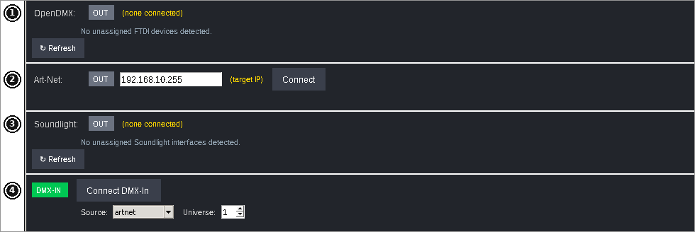

For: FullPlayer
The DMX Hardware tab of Setup & Patch connects the DMX interfaces: the ways the DMX leaves the computer for the fixtures, and the way it can come in. An Open DMX or Soundlight interface sends the universe chosen for it; Art-Net sends every universe the project uses. Several can work together. The connections are settings of the program, not of the project.

The tab on a computer with no interface plugged in.
| 1 | OpenDMX - USB interfaces of the Open DMX kind (FTDI). |
| 2 | Art-Net - DMX over the network. |
| 3 | Soundlight - Soundlight USB interfaces. |
| 4 | DMX-IN - DMX received from another desk or program. |
OUT marks the rows that send DMX.
Both work the same way.
A connection is remembered: at the next start the program connects it again. When the interface is not there, its row shows Auto-Connect: ON and waiting for the device..., and it is connected as soon as it is plugged in. A click on Auto-Connect: ON forgets it; Disconnect disconnects and forgets too.
Write the target IP - the address of the Art-Net node, or a broadcast address of your network such as
192.168.10.255 (every node of the network then receives) - and press Connect. The
button then reads Disconnect. The DMX goes to port 6454, the port of Art-Net. The target is
remembered: at the next start the program connects again, showing Auto-Connect: ON and
waiting for the target... until it can.
DMX-IN receives the DMX of another desk or program, so that it can drive channels of this one.
The channels received count only where they are switched to IN - the IN button of the function bar of Mixer & Live (MAN is manual, OUT the program's own output). See Mixer & Live.
Tip: when the fixtures do not react, look here first: is the interface connected, on the right universe? Then check that the addresses of the fixtures are the ones of the patch (see The patch list).